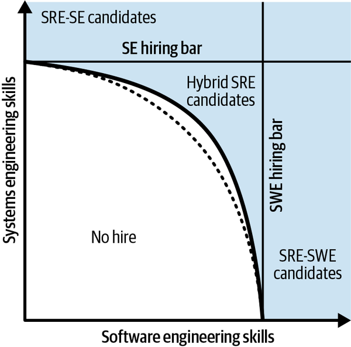
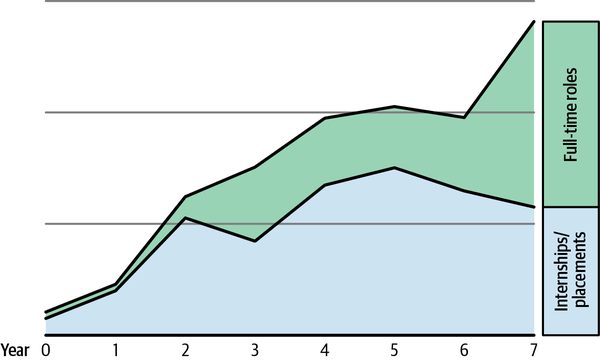
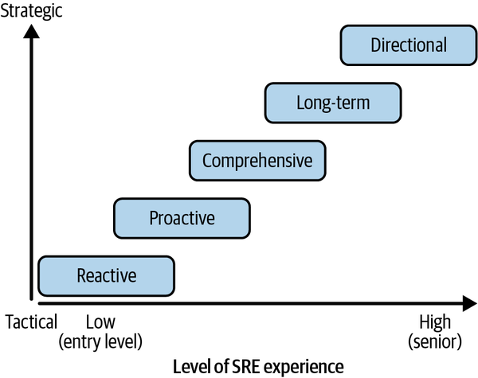

The effectiveness of SRE is closely tied to the expertise and capabilities of the SRE team. Just as hiring the right people is fundamental to building a successful team, it’s equally important to make sure your SREs are equipped with the right skill set during onboarding and to continue cultivating their skills over time. In this chapter, we offer our perspective on how to build and develop a successful SRE capability for your organization. We’ll walk you through strategies directly applicable to the SRE domain, including:
Practical insights into identifying and recruiting successful SREs
Enhancing SREs’ skills through targeted training
Establishing clear career pathways that foster a robust and efficient SRE organization
We’ll discuss how organizations can implement these strategies, and how individuals—both new and experienced SREs, as well as SRE managers—can advance their careers while building successful SRE teams.
Hiring for any role in the software engineering space is challenging, but hiring SREs is uniquely challenging. The ability to attract and select excellent candidates is of strategic importance for establishing and maintaining a successful SRE practice. The experienced engineers needed to bootstrap a new SRE function are in high demand and command a premium. What’s more, the rapid evolution of AI has already introduced new concerns (e.g., a temptation to cheat) in remote interviews. We recognize that SRE hiring processes must evolve in the near to medium term to remain aligned with the shifting responsibilities of the role within a software industry that’s being disrupted.
Finding candidates with the necessary blend of skills for operating distributed systems at scale also can be difficult. While a strong foundation in technical skills such as coding, system design, and troubleshooting is essential, these alone are not sufficient. Cultural attributes and mindset are equally, if not more, critical. It’s important to identify individuals who are passionate, curious, and able to quickly grasp how unfamiliar systems work. A key cultural aspect is a low tolerance for toil—manual, repetitive work that doesn’t deliver enduring value—driving a desire to automate and challenge the operational status quo rather than just fixing the same problems repeatedly. Adopting SRE principles requires a fundamental shift in thinking, placing greater emphasis on culture than tools.
As our SRE practice at Google matured, we found that the specific skills we needed evolved, both overall and separately within each product engagement. While early-stage SRE efforts on a new system might focus more on automating operations and reactive problem solving, a mature practice requires a shift toward proactively identifying and mitigating reliability risks through system design and engineering. This includes analyzing system architecture, developing strategic roadmaps with the product development team, designing resilient systems, and driving technical decisions across the organization. Recognizing this evolution is vital for tailoring the hiring process. In the following sections, we will delve deeper into the attributes that define a great SRE and their implications for designing an effective and robust SRE hiring process.
What makes a great SRE? A blend of technical acumen, problem-solving skills, and specific cultural attributes. Crucially, SREs often come from a wide variety of backgrounds and experiences. We consider this diversity of perspectives a key strength of the SRE function at Google because it drives creative problem solving in complex environments. Successful SREs have backgrounds ranging from traditional computer science or self-taught system administration to academic fields such as biochemistry, math, electrical engineering, physics, and even journalism and music theory. Candidate performance in interviews with future colleagues tends to be a better predictor of success than educational background.
SREs must be able to solve problems with software, meaning they should be able to write and maintain software, although they are not expected to code all the time. A typical SRE project might involve significant time spent on design, research, and convincing stakeholders before implementing a small code or configuration change. At Google, we expect every SRE candidate to be proficient at writing code, and many bring strong data structure and algorithms backgrounds. They must be skilled at technical system design, understanding systems down to their fundamental principles. Creative and systematic troubleshooting skills are essential for dissecting complex system failures, identifying potential causes, and triaging issues in an analytical way, often by formulating and testing hypotheses. SREs look for correlations and patterns across classes of incidents, rather than just solving the immediate problem. They display interest in and curiosity about technical infrastructure, seeking a deeper understanding of systems, processes, and problems.
A great SRE requires a T-shaped blend of technical skills. A consistent observation at Google is that breadth of technical knowledge and experience tends to be a better predictor of success in an SRE role than depth in a single technical field. Consequently, we encourage our hiring managers and decision makers to look for a candidate’s strengths, rather than getting hung up on gaps in some areas. This requires hiring managers to holistically assess candidates across performance in all interviews—an individual interview having gone poorly does not necessarily indicate an unsuitable candidate and could just as well reflect the performance of the interviewer. Broader contextual understanding allows SREs to quickly reason about unfamiliar system designs and their interdependencies. A successful SRE also needs the ability to think in terms of risks, proactively identifying potential issues and areas for improvement. Identifying and addressing a reliability risk before it causes an incident is naturally preferable to fixing issues after they happen. At Google, the majority of SRE hires do not have a specific SRE background or SRE experience; instead, we look for these core traits and skills.
Expanding on the behavioral aspects of great SREs, we value helpfulness very highly. In fact, we share this quote with every new SRE who joins Google as part of our SRE EDU onboarding program:
Here’s what you do when someone breaks something or finds something very difficult to debug: You say thank you. Thank you for finding this edge case. Thank you for highlighting this overcomplicated part of our system. Thank you for pointing out this gap in our docs. And then you go make it so nobody can break it the same way again.
Tanya Reilly, Google SRE 2005–2018 and author of The Staff Engineer’s Path (O’Reilly, 2022)
For example, the Google-wide incident response team—to whom we escalate the most fundamental and wide-ranging incidents—has adopted a culture of helping the requester above all, regardless of whether the escalation was necessary. If needed, feedback and education are provided after the incident concludes. In contrast, less successful critical response groups have been less welcoming and can be intimidating to new or junior staff, which might unintentionally discourage escalation of severe incidents (see “Psychological safety”).
At Google, SREs are expected to be able to challenge the status quo in an incident or technical debate alike, making a culture of psychological safety and respectful yet candid interaction indispensable. We remind people of this with a rallying cry, “No jerks!” Due to our broad purview, we often work with far more senior colleagues in the product development organization. Consequently, SRE fosters significant leadership and influencing skills earlier in an engineer’s career than in pure product development teams.
We expect SRE managers—all the way to the executive level—to bring solid technical skills and judgment to the role. It’s common practice that new managers and directors hired into Google SRE spend their first six months working as an individual contributor (IC). This typically includes an important learning experience: qualifying for being on-call for a major service or product. It’s perfectly fine for them to be a little out of practice. Their good judgment will return quickly, and we find that their willingness to engage in this technical onboarding period is a good predictor of being a culture fit for Google.
Many large companies have a concept of role profiles or career ladders, which describe the expectations for employees in a given job role and seniority level. Google is no exception. Our desire to attract SREs with a plethora of perspectives and backgrounds led to SRE having two distinct role profiles, each with different interview configurations that can be optimized for different candidates’ strengths. The SRE Software Engineering (SRE-SWE) profile is strongly aligned to pure software development backgrounds, heavy on data structures and algorithms. The SRE System Engineering (SRE-SE) profile recognizes the importance of holistic systems knowledge, with less focus on pure software development skills. Hires on either career path perform the same duties, but they bring the aforementioned diversity of approach to an SRE team. The way we connect the distinct role profiles to hiring is through what’s known as the “Treynor Curve,” which illustrates the spectrum of acceptable skill blends from both types of backgrounds (Figure 5-1).

The interview process is structured to cover a range of skills essential for the role, assigning specific topics to each interviewer. This accommodates candidates who might have traded some depth in one field for breadth across both development and systems fields, sometimes referred to as “hybrid” candidates.
Let’s look more closely at the two main tracks candidates might follow. The SRE-SWE track follows the same hiring process used for product development teams at Google. This typically centers on data structures and algorithms, as well as high-level software and API design. The SRE-SE track places more emphasis on system design skills, specifically non-abstract large system design (NALSD), which are evaluated in an interview dedicated to this topic. What sets these interviews apart from a SWE system design interview is that we also assess candidates on their ability to provide realistic numeric estimates and reason about trade-offs for reliability, cost, and difficulty, working through design layers, potentially down to the hardware. We look for candidates who can quickly understand how something works, even if they haven’t seen it before.
Due to SRE’s cross-functional nature, we consider the ability to lead and influence a core skill. We typically expect a senior SRE to be capable of acting as a technical lead for an entire SRE team, and a staff SRE to be able to provide technical leadership to the aligned product development organizations. Consequently, all senior SRE candidates receive an interview that focuses on leadership skills.
Naturally, management candidates are interviewed for their management skills and experience, but since they are expected to meet the technical bar of a staff engineer, they also receive the same set of technical interviews that any individual contributor would.
Given what is typically taught in universities, early career hires often follow a SWE-centric hiring process. The specific considerations and strategies for hiring new university graduates into SRE are a distinct topic, which we will cover in detail in the next section.
SRE principles and practices and large system design are not routinely taught in school. There is also a perception among many existing SRE practitioners that to be successful in this field, you have to be fairly senior already. Despite this, we’ve found it is absolutely possible to hire students directly from colleges and universities and bootstrap these new graduates into the SRE role. While it is a big leap to go from running a pet project spun up on a single VM for a class assignment to serving millions or even billions of users, it is possible to teach new graduates the skills required to be effective SREs through experience and targeted outreach programs. In this section, we explore our experience turning new graduates into new SREs in a volunteer-driven program that we ran in Ireland. While what follows describes our experience in that setting, we have now successfully replicated this approach in a number of other countries in Europe and beyond.
While we believe that new graduate SREs can be successful in both large and small organizations, the size of your organization will determine how much effort you can afford to invest in a program like this. What follows worked for us as a large SRE organization where we were able to harness small contributions spread across dozens of volunteers (one to eight hours per person per quarter, on average). If you are a start-up or smaller company, this level of investment is likely prohibitive. Consider using the strategies we will describe next, but on a smaller scale (e.g., focus your efforts on raising awareness of the SRE profession at a single conveniently located school).
When we started our program focused on new graduate SRE hiring in Ireland, we analyzed our existing new grad hiring pipeline and identified several key challenges. First, students in Ireland weren’t aware that Google hired engineers in Dublin at all. In addition, many students did not know what the SRE role was, so enticing them to apply was a problem. We discovered that many students lacked practical coding experience outside the classroom, and they often weren’t trained on how to write compelling resumes or CVs, making it difficult for recruiters to assess them “on paper.” Interviews were also a challenge—students sometimes didn’t do well due to nervousness or simply not being accustomed to talking through their thought processes on the spot. They didn’t realize how important it is to give the interviewer enough signal to assess them for the SRE role. Furthermore, once hired, imposter syndrome is a very real challenge for newcomers ramping up in demanding technical roles like SRE, and new graduates are no exception.
Addressing these challenges required a proactive two-pronged approach focused on awareness raising and skill building. SRE is about running services in production, which is not typically an academic pursuit. As a result, it was essential to make students aware of SRE as a profession and pique their curiosity and interest to learn more and try out the role. We did this through large-scale open houses at our offices and campus tech talks. Partnering with student groups and showing up at relevant events (e.g., those hosted by student computer science societies) helped us build a high-quality pipeline. Cultivating contacts among faculty and career services was also key to getting the word out that we were recruiting new graduates.
Skill building is equally important to help students succeed in the hiring process. Offering resume workshops helped students craft better applications that stood out. To signal the importance of practical problem-solving experience, we ran algorithms workshops and code retreats, and we sponsored and signal-boosted coding competitions. This helped students improve their resumes and interview-readiness. Publicly available resources, such as our SRE Classroom materials that dive deep into the principles of non-abstract large system design, were also useful in introducing students to SRE. Finally, we forged partnerships beyond Ireland to scale our SRE new grad outreach. In particular, we partnered with Major League Hacking on a global scholarship program that included a course on SRE fundamentals.
Our strategy for bringing new graduates into Google SRE roles involved several steps. As discussed in the previous section, we started by raising awareness of engineering opportunities, specifically emphasizing SRE through various targeted events. We also created a dedicated hashtag that students could reference on social media to stay up-to-date on the latest events and opportunities. Having someone active on social media be a single face for our student outreach in Ireland was also very effective. At one point, career services at different universities were telling their students to connect with our “front person” on LinkedIn.
We then put a strong focus on getting students in as interns as early as their first or second year of university. The barrier to entry tends to be lower for internships, and time-bound placements provide students with valuable hands-on experience working with large distributed systems. Many students that we recruited through our outreach program in Ireland came back for multiple internships before graduation. Internships allow students to try SRE before committing to it as a full-time career choice.
We worked to mobilize our existing SRE community as volunteers and role models. Our engineers talked about their work, built excitement, and demystified the role. We found that recent graduates who had come through the program themselves were particularly relatable to current students. Because the students could see a bit of themselves in these SRE speakers, this helped to address the issue of imposter syndrome in hiring new graduates (“If they can do it, so can I!”). One student who attended early events and workshops, interned in Google SRE in Dublin, and is now a staff SRE and tech lead, later hosted an intern himself. Another student attended our flagship Open House, interned, was hired as a full-time SRE, and then volunteered to run events and mentor new students. These examples illustrate what we affectionately refer to as the “circle of life.” Students recruited through the program now run the program, with a core volunteer team spanning four generations of SRE hires sustaining its operations.
Once hired, whether as an intern or full-time, newcomers benefit greatly from structured support. Internship hosts or new hire mentors serve as primary points of contact, scheduling regular check-ins and offering guidance tailored to the new grad’s skill set and level. These hosts and mentors lower the barrier for new graduates to ask questions. A starter project that is useful, self-contained, achievable, and not time-sensitive (see “Training SREs” for more on this) is a good backbone for learning, introducing the new hire to important team concepts, infrastructure, and codebases through practical application.
It’s important to play the long game when building a new grad SRE recruiting program, recognizing that increasing hiring numbers significantly can take several years. Our own graph shows a steady increase over seven years, during which time we multiplied our hires by more than an order of magnitude (Figure 5-2).

However, demonstrating short-term wins, such as an increase in applicants, in the fraction of applicants who were selected for interviews, and in interns hired, helped us maintain interest and support for the program from our stakeholders. If you are at a smaller company or a start-up and feel like seven years is an untenable amount of time to wait for results, take heart: as this graph indicates, a big chunk of the hiring benefits (e.g., increased student placements) were realized in less than two years.
Former interns converting to full-time hires was a critical success metric for the program. Taking a broad view of success was also valuable. We consider it a success if a student is hired into an internship or full-time role anywhere in the world. Additionally, while we primarily focus on SRE recruiting, we treat it as a “win” if we successfully place students into a wide range of engineering roles, including software engineering or product management. Those who interned in SRE but ended up working as software developers carried their knowledge and experience with SRE far and wide across Google, which was in itself a win for reliability.
Successfully implementing a new grad hiring program requires cross-functional collaboration. For example, the expertise, processes, and support provided by our recruiting team were essential, even though at first they were skeptical about this university outreach effort led from within the Google SRE team in Dublin. If you encounter skeptics, as we did, take the time to understand their concerns. Our steady progress increasing applicants and success in the interview process turned them into allies. Recruiting a recruiter to join the core outreach team was also highly beneficial to the program.
It’s important to point out that an SRE student outreach program like ours can be carried out as a grassroots effort rather than by formally staffing a team. Our experience in Ireland showed that with distributed but sustained effort, a 20% project2 spearheaded by a passionate group of volunteers on the SRE team can be effectively developed into a robust and sustainable new graduate hiring pipeline. So, yes—you can forge new graduates into new SREs.
Just like running services in production, we recognize that perfection is impossible with processes, too. Our hiring process into SRE at Google is definitely not perfect, but we continuously try to improve it. We’ll cover some of our (often hard-won) learnings here, but we want to acknowledge that there is always more to learn and improve about the SRE hiring experience.
When hiring Site Reliability Engineers, it’s crucial to recognize that the recruitment process is far more than a simple operational function. It likely serves as a potential future colleague’s very first exposure to the SRE role—an unfamiliar role for many candidates—and these initial impressions are formative. Speed matters in the hiring process: prolonged waiting periods between stages can be particularly stressful for candidates, especially those less familiar with the role’s expectations. Our internal research showed a direct relationship between the time from a candidate’s initial application to an offer and candidate dropout rate, especially where the process extended past about 40 calendar days. Instead of solely focusing on process throughput, we continuously review and optimize for single-candidate latency to increase hiring success. We’ve learned to never underestimate the importance of the candidate experience, regardless of the candidate’s seniority level.
It is also crucial that those involved in making hiring decisions don’t just look for reasons to reject candidates. Instead, we look for the strengths and value-adds that a candidate brings. This is especially vital in SRE because the role uniquely benefits from diverse perspectives and a breadth of experience. Our focus on strengths manifests in the hiring process through offering candidates a choice of interview slates that are tuned to reflect their different backgrounds. We avoid interviews focused on brainteasers or trivia and instead structure them to cover essential SRE skills. Building concrete large-scale systems and coding are key skills we look for in all candidates.
The practice of separating the interviewing process from the final hiring decision and utilizing a committee of engineers to make hire/no-hire determinations is essential to ensure a consistent standard, given the criticality of the systems SREs own. This committee assesses the merits of each potential hire on a case-by-case basis and helps prevent individual managers from potentially compromising hiring standards to fill immediate vacancies. While this separation of interviews and decisions does not come without process overhead, it contributes to our overarching goal to hire candidates who are smart, passionate, and able to quickly understand new systems, recognizing that for SRE the right mindset and potential for growth are more important than a specific conventional background.
In this section, we’ll explore how Site Reliability Engineers acquire and maintain the skills required throughout their careers. We’ll address the topic from two different perspectives: organizations that need to build and manage effective SRE training programs, and individual SREs navigating their personal learning journeys. We will look at both the formal programs organizations can implement, such as structured training courses and onboarding processes, and the various informal learning approaches individuals can utilize to develop and deepen their technical expertise and system-specific context. The goal is to provide insights relevant to a broad audience: aspiring SREs just starting out, practicing SREs looking to grow, and the managers responsible for supporting their team members’ development and career growth.
Let’s start by focusing on the vital role organizations play in developing the skills of their SREs. We’ll explore how organizations can effectively design, implement, and manage training initiatives, drawing insights from approaches and programs that we’ve established at Google. We’ll dive into how to identify learning needs, structure formal training courses, and incorporate valuable and scalable informal learning opportunities.
Our goal is to make sure that new team members are set up for success and that experienced team members have opportunities to build and exercise new skills, all while reinforcing a robust culture of reliability.
But first, why invest in training at all? Let’s start by considering the case of no training—the “sink or swim” approach. “Sink or swim” means you just let your SREs figure things out on their own with no guidance or support. This lack-of-training strategy breeds stress, frustration, low morale, imposter syndrome, and even attrition.
Proactively training your SREs has several key benefits in addition to avoiding the challenges inherent in that approach. Investing in training:
Signals leaders’ commitment to employee development
Ensures everyone is operating under the same set of principles and practices
Reinforces desired behaviors
Helps disseminate or perpetuate the desired organizational culture
The return on investment (ROI) of a training program can also be calculated more tangibly. Let’s work through the new hire scenario (Table 5-1).
| Factor | “Sink or swim” | With training |
|---|---|---|
Time to find and onboard a new hire |
X weeks |
Same |
Effort to find and onboard a new hire |
Y weeks recruiter/interviewer time; Z dollars in advertising, travel, relocation, etc. |
Same |
Time from onboarding to fully actualized and productive SRE |
A weeks |
A – B weeks |
Time to complete onboarding training |
0 weeks |
C weeks |
Effort to train |
0 weeks |
D hours mentor/instructor time per new hire |
Rate of attrition within the first year |
E% |
E – F% |
There is a worked example in Appendix A if you’d like to go deeper into making the business case for your own SRE training program. The time invested in training can be recouped in a faster ramp-up (e.g., to on-call), decreased attrition, or both. In some cases, a reputation for having a strong onboarding program can make it easier to hire, thus indirectly reducing the cost of recruiting.
Building and running training programs does not happen for free. The training approaches you consider and how they are delivered necessarily vary based on organization size.
There is no one-size fits all approach to SRE training; rather, training methods lie along a continuum from low effort to high effort.3 Typical methods include (from lowest to highest effort):
Point people at relevant resources, but leave them to consume the material on their own.
Pair people up so that the less experienced person can learn from the more experienced person, or provide team members with a mentor to answer questions and to shadow or reverse shadow key operations.
Offer training on different topics in the form of formal talks or informal whiteboard sessions.
Provide a formal program with well-thought-out learning objectives and content to support those objectives. Training should be offered consistently on a scheduled basis.
It’s useful to draw an analogy between the software development lifecycle and the process of building and running a training program. Just as software development involves both the definition of what product features are to be built and the operational considerations of how they will be deployed reliably to meet user needs, a training program also has distinct what and how dimensions. The “what” is the training content itself—the curriculum, the topics covered, and the learning materials. The “how” is equally important, covering how the training is delivered in a consistent and reliable way that effectively meets learner needs.
Training options fall on a spectrum of development and operational cost. A self-paced curriculum requires the same if not more effort to develop, but the operational cost to run the program is much lower.
The “how” is important for both small and large organizations. Small organizations lack the resources to stand up elaborate and time-intensive programs. In large organizations, the ability to effectively manage the delivery of training, including aspects like logistics, reporting, and the curation of materials to keep them up-to-date, directly impacts the program’s success and scalability. You likely have more people who can get involved and more organizational structures to hook into. However, the throughput of learners is probably higher too, and thus the operational cost of running a training program increases unless you take steps to ensure the program scales sustainably (more on that in “Training Program Operations”).
The size of the organization and its growth rate are critical factors that influence how training should be approached and the level of effort that makes sense to invest.4
If your organization is:
Small and growing slowly, focus on one-to-one knowledge transfer through mentoring, shadowing, and project-based learning
Small but growing rapidly, invest in an onboarding program
Large and growing slowly, invest in ongoing education as a retention and career development tool
Large and growing rapidly, invest in a full-lifecycle training program covering onboarding, ramp-up, and continuing education
Regardless of an organization’s size, building effective reliability-focused training solutions begins with clearly identifying your target audiences and their specific training needs.
Common learner profiles include:
Students, junior engineers, or IT professionals looking to transition into SRE roles, who may be new to core SRE concepts
People who have been with your company for a while but are new to SRE practices
Long-time members of your SRE team looking to further build their skills to continue to grow in their careers
Individuals with extensive SRE experience gained elsewhere, but who are new to your specific company and infrastructure
People leaders who are partners in their teams’ development while still needing to hone their own craft
Software engineers building products and services who need to keep reliability in mind while doing so
Once you’ve identified your audience mix, the next step is determining the skills to cultivate. As discussed in “Hiring SREs”, SREs often need a greater breadth of knowledge across various systems and technologies than product developers, but they also need depth in specific areas relevant to the services they are supporting—T-shaped expertise, as mentioned earlier.
Google conducted a rigorous internal research study with the primary goal of providing a comprehensive analysis of the skills and competencies required for SREs (individual contributors only) from entry to senior levels. The research focused on identifying the essential skills needed for success at different points in an SRE’s career. The methodology used to gather this data involved quantitative survey feedback combined with qualitative interviews to corroborate findings and derive additional insights. A MaxDiff survey was specifically employed to determine the preference share for various skills.
The research yielded valuable insights into the skills that differentiate SREs across different levels of experience, highlighting the top five skills that SREs themselves identified as important at each level. Core competency areas identified included technical expertise, problem solving, incident response, communication and collaboration, and adaptability and continuous learning.
The findings clearly illustrate how the mix of skills evolves as SREs advance in their careers (Figure 5-3). At junior levels, the emphasis is heavily on foundational technical skills, such as troubleshooting and understanding system basics. For example, a top skill at an entry level is to “follow a logical debug chain to diagnose and mitigate failure, using multiple different tools as appropriate.” While technical depth remains crucial as SREs progress, the focus expands to include proactive problem prevention, system design contributions, and technical leadership within a team or domain. As SREs become even more senior, we observe a significant pivot toward strategic thinking, leadership, and broader influence across the organization. For example, a top skill for a very senior SRE is to “translate business needs into solutions executed across production.” This evolution highlights the transition from an individual technical contributor to a leader and influencer driving SRE’s direction and business impact.

Table 5-2 explains the experience levels in Figure 5-3 with example activities.
| Level | Example activities |
|---|---|
Reactive |
Troubleshoot system failures |
Proactive |
Analyze and improve system architecture |
Comprehensive |
Prioritize impactful work |
Long-term |
Identify system problems |
Directional |
Develop production solutions |
It is important to note that the empirical skills research shared in this section was completed before the rapid emergence of generative AI. We recognize that the mix of skills that SREs will require in the coming years is evolving quickly. A collaborative research study between Google and Stanford University suggests that a product management skill set will become more important across the board to enable all employees, SREs included, to reap the full potential of this paradigm-shifting technology.5
Building on the identification of target audiences and their distinct learning needs, this section explores a variety of approaches we’ve found to be useful in training SREs. We’ll cover informal methods such as mentoring, documentation, and learning through experience, which are expected to be useful to organizations small and large. We’ll also examine the critical role of team-specific training and project-based learning in providing the necessary hands-on experience and context for new and growing SREs. We’ll then take a deep dive into more formal, scaled offerings more applicable to larger enterprises, like the dedicated SRE education programs and internal classes that we’ve developed at Google. The goal is to provide a comprehensive overview of the tools and strategies organizations of all sizes can employ to cultivate confident and effective SREs and reliability-aware developers.
While we concentrate here on the reliability-focused training needs of SREs, it is important to recognize that reliability is not just SRE’s concern but something the entire organization should care about. SRE principles and practices are valuable beyond dedicated SRE teams. Providing relevant training on reliability principles for non-SRE developers can help them build more reliable software and avoid common outage patterns.
At Google, we have established a small full-time team that scales through dozens of volunteers from across the SRE organization to deliver a full-lifecycle training program: from onboarding to on-call ramp-up to ongoing skill development. However, we recognize that a small team cannot cover everything, especially the deep and broad technical knowledge required to support a wide range of services running in production. Therefore, our formal learning programs are enhanced by various grassroots initiatives across the organization. Let’s look at the spectrum of programming you might want to consider.
Ad hoc, self-paced, or one-on-one learning approaches are a good place to start for small organizations. For larger organizations, given the breadth and variety of things an SRE might need to learn, scaling—through grassroots efforts bootstrapped by individual SREs or SRE teams—is also important. Informal learning methods complement structured training programs by enabling SREs to acquire knowledge and skills through daily work, peer interaction, and specific activities that occur outside of formal classroom settings. Informal approaches can also dive deeper than centrally run programs can. Informal, team-based learning is vital for ongoing development and staying current in dynamic production environments. At Google, we accomplish this through several different methods:
Mentoring programs provide valuable one-on-one support that can help new SREs settle into an organization. Mentors offer guidance and answer questions, which helps new SREs build confidence in their learning. Variations like N + 1 mentoring (referencing the reliability concept), where the mentor is from another team, can widen the support network. Peer knowledge exchange and career cohorts lessen feelings of isolation and imposter syndrome.
Shadowing experienced SREs, particularly during on-call shifts, provides practical exposure to real-world incidents and troubleshooting, which is difficult to replicate in hypothetical exercises. A variation involves the experienced SRE reverse shadowing the new SRE as they prepare to go fully on-call themselves. Although SREs are rarely alone in their production work, new SREs may still feel isolated. Shadowing and reverse shadowing offer a psychological safety net, building their confidence while reinforcing that they are part of a team.
Learning from simulations is an effective way to enhance on-call skills. While real incidents offer crucial experience essential for practical learning, controlled failure exercises such as the “Wheel of Misfortune”6 provide a safer space to develop troubleshooting skills. These simulations allow both new and experienced SREs to discover new methodologies and tools. Generative AI tools, in particular, are showing incredible promise in speeding up delivery of both technical and sociotechnical simulations.
Reverse engineering involves using debugging and monitoring tools to understand how systems work from their fundamentals. By dissecting existing systems, SREs cultivate the critical-thinking, troubleshooting, and improvisational skills that are vital when working with complex production environments. This grows an SRE’s “first principles” debugging superpowers, enabling them to troubleshoot and mitigate issues even with limited system-specific knowledge.
Reviewing postmortems individually and in groups is crucial for SREs to learn from past incidents, better understand system weaknesses, and prioritize reliability efforts. Familiarity with past mitigation and resolution strategies also enables faster resolution of future outages. For more information, see Chapter 11.
Beyond training SREs, it is useful to upskill the product developers to promote a reliability culture throughout the organization. At Google, we have the Mission Control program, a rotational program designed to immerse software developers in SRE. This hands-on exposure gives them practical experience running systems in production and helps them gain a deeper appreciation for reliability and scalability principles. It also helps foster a stronger culture of reliability throughout their teams, as participants organically share what they have learned upon their return.
Team-specific or last-mile training provides the deep, system-specific expertise necessary for supporting an SRE team’s services. Although SREs don’t need to know every detail about every system, they should have sufficient knowledge to effectively investigate and uncover necessary information about the services they support. At Google, SRE teams themselves develop and deliver this training, which covers infrastructure and service details pertinent to their responsibilities. SREs can also benefit from training developed by software developers.
Debugging production is often like traversing a vast, undiscovered graph. You can’t hold the entire structure in your mind, but the more knowledge you have in memory and the more pointers to the right documentation, the faster you can follow the path to understanding the system’s behavior.
The on-call learning checklist is a key tool for structuring team-specific training. This is an organized list of technologies, systems, and concepts that a new SRE must learn before joining the on-call rotation. This approach guides learning and aids in building a mental model of the team’s supported services. Furthermore, it makes it easy for mentors and managers to track a new SRE’s progress.
Documentation is a valuable asset for SRE because it is challenging to retain extensive knowledge in memory. Actively using and contributing to documentation reinforces learning, builds reputation, and develops essential writing and communication skills. Onboarding documentation is particularly crucial for new SREs, and it is important that this documentation remains accurate. Because new team members offer a fresh perspective, they are uniquely positioned to identify and update outdated onboarding documentation. Pairing them with an experienced SRE for expert verification can help ensure accuracy. Documentation is one of the lowest-overhead ways for small organizations to train their SREs.
Whiteboard talks are a valuable and low-toil “teach to learn” opportunity that reinforces a new SRE’s understanding of the team’s systems. The new SRE draws the system’s architecture for the rest of the team, explaining its structure, the purpose of each component, and the critical flows through the system. This should not be used as a test, but rather as a forcing function for them to learn about the system. These sessions also help other team members stay up-to-date on any recent changes to the state of production.
Facilitating regular knowledge-sharing sessions, such as biweekly tech talks, is also relatively straightforward and highly useful for continuous learning. Given that SREs often work across diverse projects and systems, these sessions help prevent knowledge silos and promote the growth of shared understanding within the team. Team members can present on technical topics, specific systems, or recent learnings, which reinforces their own understanding and benefits the broader audience by ensuring that the team’s collective knowledge remains current. Similarly, design reviews offer an opportunity to learn about upcoming changes to system architecture and practice system design skills while providing a forum to drive better decisions. Junior SREs can learn from their more experienced colleagues and the team’s combined expertise to develop more robust solutions.
Project-based learning, particularly through the assignment of starter projects to new team members, is an important element in the SRE learning journey. The primary aim of starter projects is to cement knowledge through practical application.
A key aspect of this approach is identifying and assigning the right projects to new team members, prioritizing those that are valuable learning opportunities. It’s essential to avoid the “sink or swim” approach (assigning overly complex starter projects) and the antipattern of assigning only toil work to new hires. Instead, carve out meaningful but achievable project work. This better aligns with SRE’s mission to drive reliability through proactive work, and with how adults learn—by doing.
Project work gives new team members a greater sense of purpose and productivity, keeping them motivated and accelerating their onboarding. It allows them to split time between structured learning (like checklists) and practical application, providing a balance that some individuals may prefer over just going through training materials. Working on a project can also help foster a sense of ownership over some part of the system, which can significantly aid a new team member’s learning and help build trust among their colleagues.
An effective starter project should be:
Useful to the team and/or the business
Self-contained
Achievable within a reasonable time frame
Not especially time-sensitive
Important to the team
Not in the critical path for the service or project
When assigning a starter project, consider the new team member’s background and the team’s context. A project with team relevance can give them a tour through the important systems and facilitate their onboarding. Choosing a project that aligns with their prior experience can boost their motivation, confidence, and initial productivity, particularly if other onboarding aspects tend to be more tedious. If you can find a project at the intersection of these two dimensions, you have a winner!
The goal of a starter project is for the new hire to learn, so include extra buffer time to account for learning curve variability. The project should be self-contained to avoid dependencies that could lead to roadblocks, especially for new team members who may find it more difficult to navigate technical and organizational obstacles.
Newer SREs benefit from extra guidance on projects, so having a designated mentor can be particularly helpful. Experienced SREs can support the development of their less experienced teammates by delegating small or less time-sensitive tasks from their own projects. This approach offers reciprocal benefits: newer team members gain valuable learning opportunities and can take ownership of a small project area with minimal time pressure, while mentors can cultivate their leadership skills. When the project is complete, give the new team member the opportunity to share knowledge with the rest of the team so that everyone has an opportunity to learn something.
Project-based learning is also a practical and low-overhead avenue for continuous learning. Even experienced team members often encounter projects that necessitate research to explore new tools or gain a more thorough understanding of existing systems. This process helps develop subject matter expertise, which can then be shared to further cultivate knowledge across the team.
Formal training programs offer a structured approach for organizations to impart the necessary skills and knowledge to their Site Reliability Engineers. These programs can range in scope and sophistication. We’ve found that it’s useful to tailor the approach to the size and maturity of the organization. What follows is a detailed case study of the SRE EDU program at Google, to give you a sense of what’s possible at the higher end of the spectrum of training effort. Smaller organizations will likely find these approaches to be more aspirational, while we expect larger organizations will more likely be in a position to undertake similar programs or elements of these programs.
When we founded the SRE EDU team at Google, we started with Noogler (aka new hire) Orientation for SREs. Why? The onboarding process is critical to effectively bootstrapping new SREs into an organization and is key to perpetuating a healthy organizational culture. Our SRE EDU Orientation provides new SREs with a baseline understanding of the SRE culture, philosophy, and ways of working. The program is instructor-led and focused on building confidence rather than making our new SREs drink from the fire hose of technical information about production.
Often, enthusiastic volunteer instructors want to go deep in an area where they have technical expertise. “Nooglers need a course on $foo!” they say. Avoid the temptation to pack everything into orientation, especially in a lecture format where retention is more difficult to achieve. We use a two-pronged litmus test to determine if something should be added to orientation:
Is this something that a two-week-old new hire needs to know?
If yes, is this topic more important than at least one item we are already teaching? (In other words, what do we need to drop to make room, since time is finite in our one-week orientation?)
It’s important to recognize that professionals learn best by doing, so the centerpiece of Google’s SRE EDU Orientation is a series of hands-on breakage scenarios with just enough foundational material delivered by lecture to tackle the practical exercises.
The SRE EDU Orientation breakage scenarios utilize a dedicated training environment built by SRE volunteers. The breakage service was built from the ground up as a real, scalable Google production service that a new hire might encounter on their own team. It incorporates many elements you would find in a typical production system, including frontends and backends distributed over multiple clusters, load generators to simulate activity, a storage component with features such as quotas and redundancy distributed across multiple datacenters and regions, a user-facing frontend, monitoring, code, network components, and a pager queue with an on-call rotation.
The breakage service runs on real Google production systems but is set up such that multiple complete instances, or stacks, exist. This allows orientation participants to have full ownership over their assigned stacks, enabling them to perform actions like bringing down jobs or manipulating the service without affecting other participants or other Google production jobs. The service is deliberately engineered with weaknesses to simulate plausible outages and provide opportunities for troubleshooting. The SRE EDU core team or our volunteer instructors can initiate a breakage on demand. Students then work in groups of three to triage, mitigate, and resolve the “outage.”
The primary purpose of the breakage scenarios is to provide hands-on experience with real production systems before a new SRE goes on-call. While reading documentation or postmortem reports and disaster role-playing can help, the experience gained from experimenting under realistic conditions is helpful for building confidence. These breakage scenarios are crucial for developing reflexive responses using company tooling and monitoring to respond to a developing outage. Proactively learning about systems and troubleshooting in a controlled environment is far preferable to doing so under pressure during a real incident.
The SRE EDU curriculum is designed such that short classes covering specific topics are followed by a related breakage exercise. During these exercises, students typically work in small groups. They receive a page after the instructor flips a bit to “break” the system. Students then practice working with the tools used during an outage and follow the organization’s incident management procedures, such as Triage, Mitigate, and Resolve.
The teaching style for these hands-on activities evolves as the students gain confidence. Initially, the instructor might “drive” the entire exercise, asking for input from the participants, to demonstrate the process. As students progress, the instructor transitions to a coach role—getting students started and providing guidance—and finally to a “guide on the side,” offering less direct interaction and primarily answering questions as participants reason about the breakage.
Participating in breakage scenarios helps new SREs develop foundational technical skills, including troubleshooting and debugging, and gain a deeper understanding of systems. Specifically, they learn how to troubleshoot, mitigate, and resolve issues by examining logs, metrics, and other evidence. They also gain experience using the company’s tooling and monitoring systems.
Beyond technical skills, these exercises help prepare SREs for the stress of on-call duties, teaching them to “keep their cool” and manage their stress levels. The overall story woven into the training, including the breakage scenarios, is that things break, often in interesting and novel ways, and the goal is to learn strategies to combat these failures. Resolving deliberate breakages helps students better understand the reasoning behind the curriculum.
The breakage scenarios are an example of applying SRE principles to the training program itself. Learning from failures is a primary principle of SRE, and these exercises provide a controlled environment to practice incident response and root cause analysis. They also encourage collaboration among learners, as students typically work in groups.
These hands-on exercises are similar in concept to other forms of disaster role-playing used within SRE teams, such as “Wheel of Misfortune” or “Walk the Plank” exercises, which are also used to hone emergency mitigation and system debugging skills. Successful disaster role-playing, like the breakage scenarios, ensures everyone learns something and inspires teammates.
Within the structured learning and training programs for SREs is Google’s SRE EDU Going On-Call curriculum. This series of classes is a critical component for preparing engineers for one of their most daunting responsibilities, and it’s designed as a direct follow-up to the foundational SRE EDU Orientation. Its primary objective is to equip engineers, particularly those who will be holding the pager, with the necessary knowledge and confidence to effectively handle on-call duties for a service. The curriculum is deliberately service-agnostic, ensuring that it is broadly applicable across the diverse services managed by different SRE teams. The detailed technical knowledge, processes, playbooks, etc. that are specific to an individual service are deliberately out of scope for the SRE EDU team. In an organization the size of Google, it would be impossible for a centralized training team to maintain the service-specific training discussed earlier in this chapter. Instead, the core EDU team provides general advice and support for delivering this kind of training, but it’s up to individual SRE teams to develop and execute it.
While SRE EDU Orientation is delivered as an instructor-led experience, the SRE EDU Going On-Call curriculum is deliberately a self-paced offering. This provides flexibility for learners while managing the operational overhead on the core EDU team. Later, we’ll dive deeper into important considerations for training program operations that influence decisions like these.
While not a strict technical block, completing the on-call curriculum is highly encouraged for individuals, both SREs and developers, slated to go on-call. To ensure SRE Nooglers receive this essential preparation, they are automatically enrolled in the three-class program, typically one to two months after joining the team.
The classes are:
On-Call Basics (about the stages in handling a smaller outage)
Incident Management at Google (IMAG) and Declaring an Incident
On-Call Escalations (about the steps in handling outages where escalation is needed for whatever reason)
The goal of this curriculum is to give new SREs a mental map of where they are in the stages of an outage and to bolster their confidence in their ability to go on-call for a service.
Continuous education is also important for SREs. While initial training programs like SRE EDU Orientation focus on building confidence, ongoing learning is more about keeping engineers up-to-date with specific techniques, tools, and system changes. Even large organizations have finite resources to bring to bear to train their SREs. Because of this, the SRE EDU team focuses on providing a scalable platform for continuing education, which we call the Annual Week of Education (AWE). AWE is a virtual learning event focused on reliability topics. It leverages content created and delivered by Googlers with expertise in a given topic. The SRE EDU team puts out a call for talks and is responsible for selecting the program, marketing the event to SRE and the broader developer community, and running the show.
Because participants and instructors are globally distributed, AWE classes are taught almost around the clock throughout the week. Classes can be attended live, either locally or remotely, and are recorded to allow people in nonoverlapping time zones or those who missed a session to access the content later. These recordings are turned into self-paced training that people can then access throughout the year.
The content is maintained by subject matter experts (SMEs), and the SRE EDU team monitors the freshness and continued validity of materials. Running a formal ongoing education week like AWE serves as a forcing function for SMEs to put together a training. Without the engineered urgency of an upcoming event, people often procrastinate and the training never gets created.
One final consideration for formal training programs is how to equip SRE managers with the skills they need to lead teams effectively. Programs like Google’s Site Reliability Manager Education (SRM EDU) are designed specifically for new SRE managers. SRM EDU covers important topics that aren’t usually included in general company management courses, focusing on SRE manager–specific processes, tooling, and challenges like working in split-site teams.
Now that you’ve identified your target audience(s) and seen different options for deploying both formal and informal learning and development programs, this section tackles how to design and build effective content using instructional design principles.
A common model used in instructional design is the Analyze, Design, Develop, Implement, and Evaluate (ADDIE) model. You’ve already completed the Analyze phase by evaluating your audience and its learning needs. The Design phase focuses primarily on defining learning objectives based on what you’ve identified. It also involves defining evaluation strategies and exercises; identifying the necessary content, instructional guides, and media; and mapping out the desired student experience. For technical content, creating a list of SMEs on the topic is another key task. For hands-on curricula, creating a design document, similar to a software design document, provides a single source of truth for what the training will entail and how it will progress. The goal is to design content around clear learning objectives rather than covering the subject exhaustively. You don’t want to crank up the pressure on the fire hose of information!
To help create clear learning objectives, Google’s SRE EDU team uses the “A Student Should Be Able To” framework, which emphasizes using action verbs to describe observable behaviors that participants should demonstrate after completing the training. This approach also makes evaluating the effectiveness of training much easier, since you can define exercises, quizzes, and survey instruments that provide data to corroborate whether the training is hitting the mark. A poor learning objective would be something like “a student should be able to understand our monitoring tool.” A better learning objective would be “a student should be able to identify memory usage using our monitoring tool.” Focusing on action verbs and avoiding vague terms like “understand” or “know” makes the training objectives clearer and more directly relevant to the job SREs are paid to do. Learning objectives guide the development of training content and materials, ensuring they directly support the intended outcomes and making it clear to students and stakeholders what skills will be gained and how effectiveness will be measured. They also make it easier to guard against incorporating too much information. If a slide, document, concept, or exercise doesn’t contribute to the agreed learning objectives, cut it.
Following the Design phase, the Develop phase involves assembling the training materials, building activities, and creating evaluation instruments based on these objectives. Designing for modularity around learning objectives is key, rather than including all content related to a topic. For instructor-led training, adequately preparing trainers with the context of these objectives is also essential for effective delivery.
Once you’ve implemented the training by training the trainers,7 scheduling and marketing the course, and holding sessions, keep a tight and iterative feedback loop in the Evaluate phase to drive continuous improvement. You might have to tweak the content or the delivery method. That’s where we’re headed next—a deep dive into training program operations.
A big “Aha!” moment for the Google SRE EDU team was the realization that SRE principles apply really well to training program operations. By treating the training program analogously to a production service, organizations can leverage concepts such as monitoring, incident response, testing, and capacity planning to ensure the program remains healthy and effective. This systematic approach to program operations also helps the team scale sublinearly to the training delivered and the audience served. By automating tasks such as managing materials, scheduling, and other administrative toil, the team is ultimately able to deliver a more reliable and impactful learning experience.
In some instances, applying SRE principles to our own program was the only way we could meet our goals. For example, the SRE EDU Orientation program has a theoretical maximum capacity of about 1,000 participants a year. A few years ago, we were tasked with bringing foundational SRE production principles and best practices to the broader community of software developers at Google: an audience that was well over an order of magnitude larger than our max capacity.
The first inclination of our stakeholders was to put the devs through a mandatory instructor-led training. We looked at the “what” and the “how” and realized that this would be an operational impossibility given the size of the team and the time frame in which our stakeholders wanted to deliver the training. Instead, we opted for a self-paced training with automated delivery to the target audience. We implemented automation to deliver escalating nags up the management chain for people in the target audience who didn’t complete the training. We canaried the training by delivering it to a small fraction of the target audience (1%) and then did a progressive rollout, which enabled us to iterate early based on user feedback and led to a +30 pp jump in the Net Promoter Score for what was essentially a compliance module. Required training tends to receive less positive feedback since it is “forced” upon the audience. By applying SRE principles to the training program, we were able to achieve Net Promoter Scores only a few percentage points behind our most popular instructor-led offerings. In this way, we were able to scalably deliver this production safety training to tens of thousands of engineers across Google. Over 95% of the target audience completed the training and were able to successfully answer nuanced questions about realistic production safety scenarios.
Another great example of “SREing” a training program is what we’ve dubbed “On-Call Ready.” We noticed that more and more teams were asking us about our SRE EDU Orientation breakage scenarios. In theory, any engineer going on-call for a service, not only SREs, would benefit from completing at least one of these exercises. In their original incarnation, they were operationally intensive to run. The engineers on the SRE EDU core team took that as a challenge: could we make the breakage scenarios completely self-service and thus remove the 1,000-people-per-year upper limit on participation? The team created a reservation service where self-organized teams of three could “check out” a stack. Startup, cleanup, and reset of the stack was entirely automated. We supplemented this engineering automation with extra documentation. One person in each group of three volunteered to be the “teaching assistant” and was given extra step-by-step instructions for how to lead the team through the breakage. The team has already increased the number of participants five times above our theoretical maximum, and we expect this to go much higher as we market this training offering more broadly.
Now we’ll look at strategies to help you chart your own course as an aspiring or new SRE. Be prepared for a journey that involves continuous learning and adaptation, often accompanied by feelings of imposter syndrome. Understanding that these feelings are common and that focusing on tangible learning objectives can help you build your confidence.
To effectively navigate the SRE landscape and grow throughout your career, you will need to foster a combination of technical and professional abilities, and learn to think like an SRE.
The broad technical foundation crucial for SRE work includes:
Core technical proficiency in troubleshooting, debugging, and understanding how systems work
Deep system-specific knowledge about particular infrastructure components and services that the team is responsible for
The ability to write code in at least one programming language
The ability to reverse engineer production services to foster improvisational thinking and the ability to solve problems from first principles
An understanding of designing systems for simplicity, operability, reliability, and scalability (NALSD)
The materials that you’ll find on sre.google are a good place to start. To grow your knowledge, utilize practical resources such as coding platforms (like LeetCode) or tutorials for system design, and gain insight into troubleshooting and distributed systems through reading tech blogs and incident postmortems.
Experienced SREs can weave together many areas of knowledge across different infrastructures to debug complex systems and identify risks, and to build systems that make the right trade-offs.
In addition to technical capabilities, professional skills are essential for success. Given an SRE’s frequent interactions with various teams and stakeholders in incident management and project execution, the ability to communicate clearly and collaborate effectively is paramount.
In a way, working in SRE is like working two different jobs that compete for your time: one involves planned project work to improve reliability or reduce toil; the other involves operational work, including being on-call, responding to pages, handling production tickets, writing postmortems, and dealing with other kinds of interrupt work. Due to this variety of work, you will likely experience frequent context switching between tasks, which hinders productivity. Effective time management and task prioritization skills are necessary to manage and balance both jobs. At Google, we set a maximum of 50% time on operational work to avoid teams getting consumed by toil.
Adopting an SRE mindset involves internalizing what SRE is and how it differs from other engineering roles, the importance of a blameless culture for learning from incidents, how SREs balance developer velocity with acceptable risk levels, and the core reasons and benefits behind SRE practices. Embracing the SRE culture and its ways of working is a journey that involves a shift in thinking, which you’ll develop over time. For more on this topic, see Chapter 4.
As you continue on your SRE journey, it’s important to find the right learning opportunities. While you may initially get direction from more experienced SREs, over time you will be expected to take greater ownership of your professional growth.
Actively seeking out the right projects can significantly impact your learning trajectory. After your starter project, consider what kind of project would best align with your skills, interests, and career goals. SRE work spans numerous areas, such as automating and eliminating toil, improving monitoring, and enhancing reliability. Evaluate the outcomes a project offers, like gaining experience with a new system, building subject matter expertise, or landing an impactful reliability improvement.
It’s also beneficial to look for relevant learning opportunities, including both internal training and tech talks and external resources, such as the SREcon talks on the USENIX YouTube channel. Beyond formal learning, broadening your knowledge by connecting with other SREs in the wider community (e.g., by attending industry conferences) is highly useful to learn from the experiences of others. At Google, we have an informal weekly meeting called a production meeting where engineers across a given site are invited to swap stories about the prior week’s failures and successes. This provides a valuable opportunity for SREs to learn from the technical experiences of other teams across the organization. Importantly, it also reinforces a blameless culture and other SRE best practices by exposing engineers to real-world examples.
By engaging in diverse learning activities and developing the necessary skills and mindset, you—as an aspiring or new SRE—can effectively navigate the steep learning curve, build confidence, contribute meaningfully to your team, and progress in your career.
Building a career in SRE is a journey of cumulative impact and sustained growth. As discussed throughout this chapter, SRE as a discipline requires teams to have a breadth of knowledge and experience. To achieve that, we need people who are in it for the long haul—who are interested in growing to become leads and experts and building their careers as SREs. We look for talented engineers with the potential to become force multipliers—individuals who achieve through their own work and through leading others an impact that is an order of magnitude greater than what other engineers might achieve. This section explores how SREs progress in their careers and the role that both individuals and organizational structures play in this development. We focus here on how SRE managers can grow and retain people in their organizations, and how aspiring and practicing SREs manage their own careers.
Achieving this level of impact and building a long career in SRE relies on growing specific core skills. This section will focus on three vital elements: breadth of knowledge and involvement, proactive initiative, and teamwork. Obviously, the career path of every SRE will vary, but here we present some notable themes based upon what we’ve seen work (and not work) at Google and throughout the industry. Being a successful SRE ultimately boils down to consciously and continuously growing across the dimensions described here, all while proactively engaging within and across teams.
As discussed earlier, SREs need T-shaped expertise—breadth in addition to depth. Every SRE needs to develop a comprehensive understanding of the architecture of the whole ecosystem they are responsible for, so they can effectively introduce system changes and handle incidents. Because the systems are always evolving, this requires a significant regular investment in training. As an SRE’s career progresses, they need to be subject matter experts in the production environment, providing expertise and engineering leadership for their whole area of production infrastructure and software.
An SRE needs expertise in up-to-date SRE practices (as covered in subsequent parts of this book), particularly in the context of their team. They should be able to make changes and debug incidents across key areas such as storage, networking, control planes, monitoring systems, load balancing, and data integrity, as well as other layers of the services their team owns. They need to be knowledgeable about upstream and downstream dependencies and know how to interact with the stakeholders from software development, operations, and other SRE teams. And, particularly as the discipline shifts toward human–AI collaboration (see Chapter 21), SREs must embrace AI-based tools and agents to maintain operational velocity. In this era of rapid innovation, staying up-to-date on efficient and reliable methods is essential, as yesterday’s approaches are quickly superseded.
As an SRE grows in their career and seniority, the breadth of their influence also grows. A senior SRE is expected to be a source of projects, programs, and direction. Their impact and scope of responsibility extend beyond the team to the product, the business, and/or the organization as a whole. We would also use this opportunity to caution senior SREs against becoming disconnected from the systems they oversee: the ability to act as effective leaders and trusted arbiters of technical decisions tends to fade over time without regular hands-on engagement with production, so we advise making it a priority to spend time close to production, responding to incidents, being on-call, and writing code.
Consider two examples from SREs at different levels in their careers. A junior SRE could have a project to improve the alert quality of one of their team’s services, which would require an understanding of “what can go wrong” across all the frontend and backend components. A more senior SRE might take on a project to design and lead the implementation of a set of alerting principles, templates, and libraries for all services across a product area. This would require an understanding of operational needs, architectures, and commonalities across multiple services.
We covered breadth first because a broad understanding of systems enables SREs to be more effective in taking initiative and driving improvements. We strive as an organization to think beyond delivering on service level objectives, looking for improvements that contribute beyond the obvious. We strive to bring new ideas on how to make our products more reliable, more efficient, and more secure—the overarching goal of the SRE organization.
Early in an SRE’s career, this applies at the team level. Junior SREs are expected to bring forward and drive ideas that improve projects and positively impact other SREs, software engineers, and customers.
With more senior SREs, the sphere of influence is larger. As SREs grow in their careers, we expect them to challenge the status quo, influence stakeholders from a position of deep system understanding, and make systems more reliable, efficient, and simple. Senior SREs are able to recognize areas for improvement at the organizational level, and put in place efforts to make things better, faster, and cleaner.
In our example of projects dealing with improving the quality of alerts, a junior SRE’s project might require them to initiate some adjustments to the metrics used and their thresholds, and to convince their team or leads to agree to these changes. A senior SRE’s cross-infrastructure project might require them to influence several teams and leaders to adopt the new standard.
Because of the broad scope covered by SRE, there are usually a vast number of moving parts and stakeholders. This requires SREs—especially the more senior among them—to hone key professional attributes such as leadership, communication, and empathy. Teamwork is absolutely essential for enabling the team to grow, through training and learning from each other. It is also critically important for handling production incidents.
At a junior level, teamwork means practices like sharing information, providing regular training to teammates, and collaborating with others on designing production changes. At a more senior level, SREs are responsible for actively championing, within their sphere of influence, the core cultural elements outlined in Chapter 4. This includes fostering practices such as blamelessness, collaboration, and psychological safety, while eliminating antipatterns such as knowledge silos, unsustainable heroics, and being territorial about work.
Experienced SRE individual contributors (ICs) collaborate with many SRE and development teams. Their software development stakeholders are often more senior than they are, and it requires strong collaboration and influencing skills to achieve SRE goals.
At Google, we foster teamwork skills across the organization by evaluating them during the hiring process (as described in “Hiring SREs”), making teamwork a factor in performance evaluations and requiring level-appropriate evidence of teamwork for promotion.
SREs advance through their careers by developing and applying their skills, no matter their scope—be that the relatively small domain of a junior SRE or the organizational-level scope of a senior SRE. One track for career development involves becoming a manager. However, it’s important to also provide ICs with a non-management career track. We achieve that in Google SRE through technical leadership expectations.
In theory, we could expect technical leadership to be the responsibility of managers, but at Google, this is infeasible because we want managers to invest most of their time in managing and developing their teams. A Google SRE team is often relatively large (typically 7–10 people per location, and usually two locations), owns many different components developed by multiple development teams, and works with many stakeholders (e.g., software development teams, backends, dependencies, other parts of the SRE org). We do expect an SRE manager to be able to do solid engineering work on their team (and we certainly expect them to be on the team’s on-call rotation), but we don’t expect them to be the team’s best engineer or a technical leader. This provides technical leadership opportunities for mid-level and senior ICs, and it’s part of their formal job expectations.
As we’ve said, SREs typically manage many services and interact with a vast number of stakeholders. Because of this, starting from mid-level SRE IC roles, there is a strong expectation of technical leadership and of achieving goals through influence and collaboration. This includes taking on tasks such as:
Leading large projects that span multiple quarters and involve several other contributors
Influencing other teams to align resources and direction of efforts
Mentoring and training other team members
Promoting insights, best practices, and standards that can be applied to improve operations across teams
Contributing to the technical vision and roadmap for the team’s work
Such expectations manifest differently in similar mid-level roles in Google’s software development organizations. The ICs on the software engineering side are mainly focused on development of specific projects, but SRE at Google (as a flatter and more breadth-oriented organization) relies heavily on ICs for technical leadership across its services and ecosystem.
As SRE ICs advance through their careers into senior IC roles, such as an area tech lead or a production tech lead, the leadership expectations grow. They become responsible for:
Ensuring their group’s direction is aligned with the rest of the business
Translating business needs into technical reality, and stakeholder concerns and requirements into actionable insights for decision making
Establishing consensus and driving decisions across multiple teams acting as a trusted and neutral arbiter
Building up the leadership in the org by creating, encouraging, and supporting technical leadership opportunities
Resolving and routing technical escalations
Ultimately, the SRE IC career path is one of increasing scope and leadership. The technical leadership track is essential for developing the expertise and collaborative influence needed for a reliability-focused organization, and it also helps retain top talent.
As we discussed earlier in this chapter, the time it takes to onboard an SRE is much longer than in software development roles. It can take up to a year for a junior SRE to be ready to be on-call for a production service (depending on the scope and complexity of the products supported), and it can take a year or more for a senior software engineer to onboard to a similar role in SRE. This investment makes the cost of attrition very high. Hence, talent retention is important, and we have several strategies to achieve it, including:
Preparing proactive mitigations for attrition
Flexibility to accommodate individual SREs’ needs and constraints
Opportunities for SREs to change things up and grow in their careers
A team should be fault-tolerant and robust to unexpected attrition. If it isn’t, the consequences can be serious: for example, not having enough people for the on-call rotation, loss of expertise, and having to reassign resources to staffing and training.
To avoid this, SRE managers apply classic SRE approaches—in the spirit of “hope is not a strategy”—to managing their teams. Best practices include being N + 1 on on-callers and experts, avoiding silos or single points of failure, using a data-driven approach to estimate average hiring needs, and maintaining a proactive pipeline of new hires. The goal is to grow and retain great engineers who can find career fulfillment within the team.
At Google, career management is viewed as the shared responsibility of an employee and their manager. The employee is responsible for the decision making and the final outcome, and the manager works to ensure that the employee has what they need to be productive, keep growing, and be happy in the team. Given the high cost of attrition in SRE, managers take a particularly active role in retention. Beyond standard practices such as career conversations, coaching, and assigning mentors, SRE managers must address challenges unique to the role, such as operational overload. A key responsibility is enabling direct reports to dedicate time to high-potential engineering work by aspiring to minimize toil, automate ops work, and have a portfolio of engineering projects at the ready.
One of the most frequently given reasons for attrition from SRE is the on-call requirement. To retain people for whom the classic on-call schedule is not an option, we advise managers to implement more flexible on-call approaches. This includes shorter on-call shifts, splitting shifts between two people, clear emergency swap procedures, and full exemption procedures on a case-by-case basis.
Another aspect of SRE retention is mobility. We recognize that many people like to try something new after several years in one position, and we encourage them to do this within the SRE org by switching teams, rather than moving elsewhere. The increased standardization of services, infrastructure, and tooling has made internal team migration much easier than it was during the earlier stages of SRE. Not only does this allow us to retain core SRE expertise, it’s also a great way to share knowledge and best practices between teams. We achieve similar goals on a smaller scale through SRE-wide tech talks, rotation programs (e.g., Mission Control), and the short-term “SRE exchange” program, where people can spend a week in a team of their choice.
At Google, a manager’s job is to support their direct reports in their career development, wherever it takes them. This approach ultimately contributes to the company’s broader ability to retain talent, even if it means an individual SRE moves to a different role. However, even in cases where folks move to another team (e.g., software engineering), it’s still a win for SRE since presumably that team member will bring a focus on reliability and the tenets of SRE culture with them.
In this chapter, we emphasized that the cornerstone of a successful SRE practice is its people. There are unique challenges to hiring SREs, and we examined some strategies for recruiting candidates with the right blend of technical expertise and cultural fit. Comprehensive training, both formal and informal, is important to onboard new hires and continually develop more experienced SREs. While finding the right people and ensuring they’re properly trained is essential, effective career management to promote growth in core areas—breadth, initiative, and teamwork—is equally important. Ultimately, strategic investment in the recruitment, development, and retention of skilled SREs is paramount for building robust teams and cementing the gains in system reliability that come with establishing an SRE practice.
1 See Chris Jones, Todd Underwood, and Shylaja Nukala, “Hiring Site Reliability Engineers”, ;login: 40, no. 3 (2015): 35–39.
2 A 20% project is time spent (up to one day per week) on work that is both interesting to the Googler and beneficial to Google, separate from the Googler’s primary assigned work. 20% projects are empowering and allow for experimentation, improvement, and innovation.
3 We discussed the perils of the “no effort” approach to training in the previous section.
4 We discuss these topics in greater detail in Training Site Reliability Engineers.
5 Amanda Pratt and Melissa Valentine, “To Drive AI Adoption, Build Your Team’s Product Management Skills”, Harvard Business Review, February 3, 2026.
6 See the “Disaster Role Playing” section of Chapter 28 in the first edition of the SRE Book.
7 The depth of train the trainer activities depends on the complexity of the program and curriculum. Ramp-up of new instructors may involve live lectures, self-paced training, shadowing of experienced instructors, or simply thorough documentation. The goal is to ensure that the courses are taught consistently and reliably across the board.